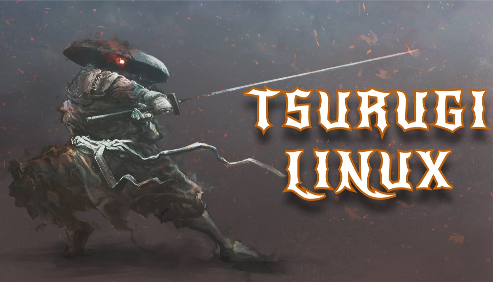

Sistemas Operativos
La diversidad es una de las mayores fortalezas del ecosistema Linux.





Explorando el mundo de las distribuciones Linux.
Cada distribución Linux tiene características únicas para diferentes propósitos.
La diversidad es una de las mayores fortalezas del ecosistema Linux.